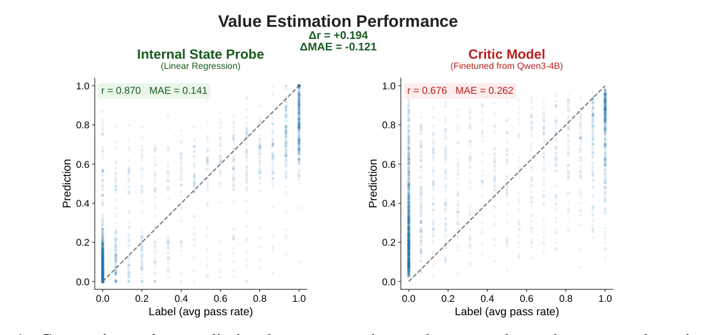
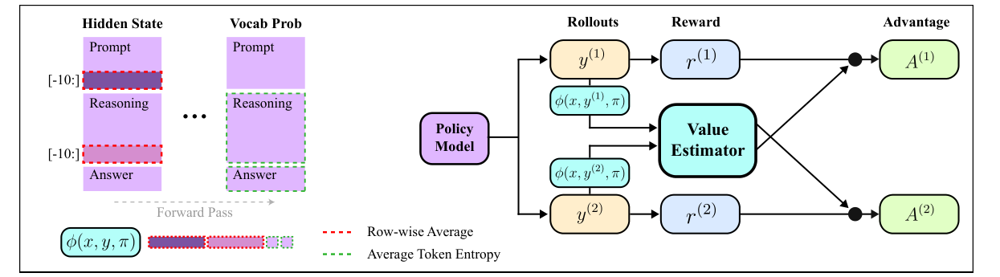

No separate critic model
Instead of training another language-model-sized network, POISE uses the actor's internal states.
arXiv preprint · cs.LG · 2026
Reinforcement Learning with Value Estimation from Actor’s Internal States
*Equal contribution. †Corresponding author.
POISE asks how the actor's internal representations can be folded back into RL training: it uses hidden states from the model's own generation process to estimate expected reward, reducing noise without a separate critic or many extra samples.
Reinforcement learning with verifiable rewards trains language models from outcome feedback, such as whether a final math answer is correct. This feedback is powerful but noisy: two responses to the same prompt may receive very different rewards, and noisy updates can make training unstable. Existing methods reduce this noise by estimating a baseline, either with a separate critic model or with multiple rollouts from the same prompt. POISE studies how to use the actor's own hidden states for that baseline, so the training loop can use information the model already computed while generating its answer.
Introduction
A good baseline makes RL updates less noisy. POISE replaces expensive baselines with a lightweight estimator trained on hidden states and entropy statistics that the actor already computes during generation.
Instead of training another language-model-sized network, POISE uses the actor's internal states.
POISE avoids spending many same-prompt samples just to estimate a group-relative baseline.
The estimator is updated as the policy changes, using current and recent rollouts.
Preliminary
Before using internal states inside RL training, POISE first tests whether they can support prompt-level value estimation. On held-out DAPO-Math rollouts, a lightweight probe trained on hidden states and entropy is compared against a separately trained policy-scale critic.

The internal-state probe reaches Pearson r = 0.870 and MAE = 0.141 on the preliminary benchmark, indicating that verifier-reward information is accessible from the actor's own forward-pass signals.
The comparison critic is finetuned from Qwen3-4B, but reports r = 0.676 and MAE = 0.262 in the same setting. POISE therefore starts from a simple observation: the actor already carries a useful value signal.
Method
A generated answer should not directly create its own baseline, because that can bias the policy gradient. POISE solves this with a simple paired-rollout trick.

The old policy samples two independent responses for each prompt.
POISE collects hidden-state pools and token entropy statistics from each response.
Each response subtracts a value estimated from the other response, preserving independence.
A small probe is trained online so its predictions follow the changing actor.
Results
Across AMC23/24, AIME24/25/26, HMMT25, and BRUMO25, Avg@32 estimates pass rate from 32 sampled answers per problem. Against DAPO, a state-of-the-art GRPO-based RLVR method for mathematical reasoning, POISE reaches comparable accuracy while avoiding the same rollout-heavy baseline estimation.
The reported math suite spans olympiad-style reasoning problems from AMC, AIME, HMMT, and BRUMO. DAPO does not train a separate critic; POISE targets the same baseline-estimation bottleneck from the actor's internal states.
The average is not meant to hide dataset-level variation; it summarizes whether POISE reaches the same regime as the SOTA DAPO baseline across the seven reported math tasks.
DAPO is the harder comparison because it is already a strong GRPO-based RLVR method. POISE aims for comparable accuracy while spending less wall-clock time on baseline estimation.

Analysis
After showing that the probe is reliable enough to use, the paper analyzes why it works: whether it tracks a changing policy, generalizes beyond math, and depends on simple, linearly accessible internal signals.
Online analyses evaluate the estimator every 10 training steps against empirical Avg@8 values from the current actor checkpoint, testing whether it remains useful as the policy changes.
The same internal-state idea is tested on math, coding, tool-calling, and instruction-following RLVR tasks, suggesting the signal is not just a math benchmark artifact.
Probe ablations show that a linear ridge probe is competitive with larger MLP probes, supporting the claim that value-relevant information is readily accessible.
Higher is better. Qwen3-4B value prediction across RLVR domains.
Lower is better. Shorter bars mean smaller prediction error.
BibTeX
Citation metadata is based on the arXiv preprint record.
@misc{choi2026poise,
title = {Your Language Model is Its Own Critic: Reinforcement Learning with Value Estimation from Actor's Internal States},
author = {Yunho Choi and Jongwon Lim and Woojin Ahn and Minjae Oh and Jeonghoon Shim and Yohan Jo},
year = {2026},
eprint = {2605.07579},
archivePrefix = {arXiv},
primaryClass = {cs.LG},
note = {Preprint}
}